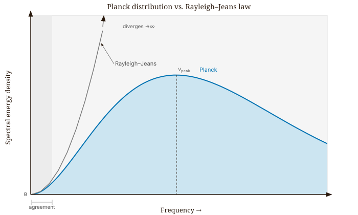
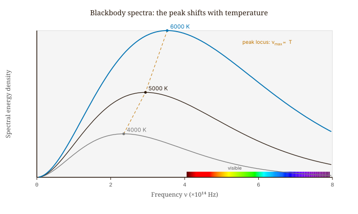
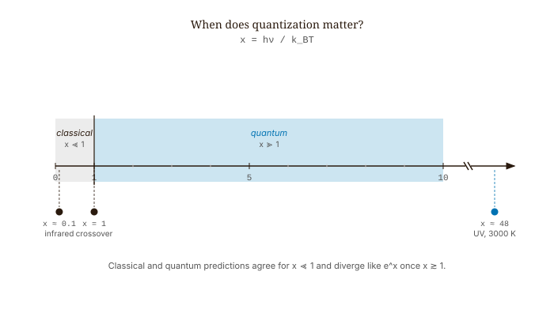
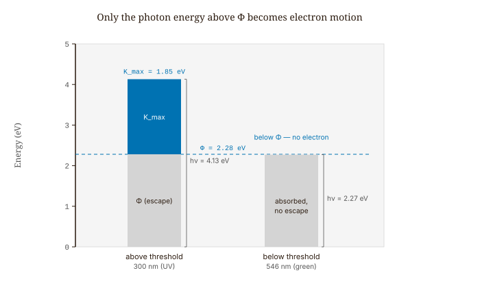
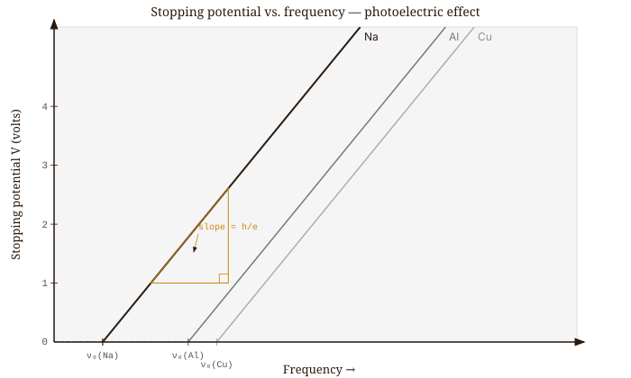
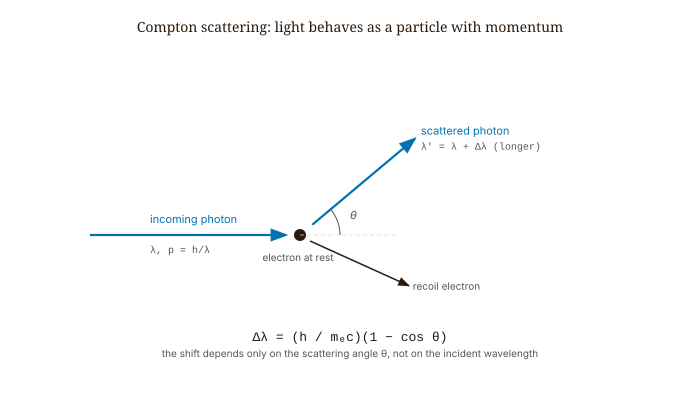
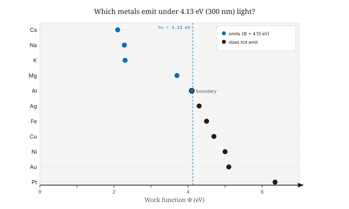

Quantum Mechanics · Volume 1
Chapter 1 — How Classical Physics Failed, Leading to the Birth of the Quantum
Heat almost anything hot enough and it begins to glow. A stove element creeps from dull red to bright orange. A blacksmith’s iron in the forge passes through the same sequence — dull red, then cherry red, then orange, then a dazzling yellow-white — as it gets hotter. The striking thing is what the color does not depend on. It makes no difference whether the object is iron, ceramic, or a lump of coal: two objects heated to the same temperature glow with the same color and give off the same blend of light. The glow acts as a thermometer, reporting the object’s temperature and nothing else about it.
To pin this down, physicists spread the emitted light out into its separate colors — its spectrum — and measure how much energy comes out at each wavelength, running from infrared, through the visible band, into the ultraviolet. Plotted as a graph, the result is a smooth hump: little energy at the lowest and highest frequencies (longest and shortest wavelengths), rising to a peak in between, with that peak sliding toward the blue end as the object gets hotter. By 1900 two experimenters, Otto Lummer and Ernst Pringsheim, had charted these curves in the laboratory with great precision, and found the same clean, reproducible shape for every hot object. It was exactly the kind of simple, universal fact that a good theory ought to explain with ease — and that is precisely where the trouble started.
When physicists fed this glowing light into the established physics of the day — the same mechanics and electromagnetism that had succeeded everywhere else — the theory did not just miss the curve by a little. It predicted a catastrophe. It insisted that every warm object should radiate infinite energy, piling up more and more output at higher and higher frequencies (shorter wavelengths) without any limit — a runaway toward the ultraviolet that would come to be called the ultraviolet catastrophe. Taken at face value, the equations claimed that the walls of an ordinary warm room should be drenching you in an endless torrent of ultraviolet light and beyond. Plainly, nothing of the kind happens — a warm room is just a warm room. But the fact that respectable, well-tested physics confidently predicted something so absurd was a signal, loud and impossible to ignore, that something at the foundation was badly broken.
1.1 Blackbody Radiation and the Ultraviolet Catastrophe
The classical argument is short, and it is worth walking through slowly, because every quantity in it has a clear physical meaning. Picture a hollow box — physicists call it a cavity — with walls held at a fixed temperature \(T\) (measured in kelvin). The warm walls glow, filling the inside with electromagnetic radiation: light of every color, plus the infrared and ultraviolet we cannot see. In thermal equilibrium this radiation settles into a steady mixture, and our goal is to predict how much energy the mixture carries at each frequency.
Light inside the box behaves like a standing wave, in the same way a guitar string fixed at both ends can only vibrate in certain patterns that fit between its endpoints. Each allowed pattern is called a mode. The first question is simply how many modes are available near a given frequency. Here \(\nu\) (the Greek letter nu) is the frequency — the number of oscillations per second, measured in hertz — and \(c\) is the speed of light. Counting the standing-wave patterns that fit inside the box gives
\[\frac{8\pi\nu^2}{c^3}\]
modes per unit volume per unit frequency interval — that is, the number of available wave patterns per cubic meter of cavity, in a one-hertz-wide band around the frequency \(\nu\). The feature to notice is the \(\nu^2\): the higher the frequency, the more ways there are to fit a wave into the box, so the mode count climbs steeply toward the blue and ultraviolet. This count is not in dispute; it is a geometric fact about waves in a box.
The next step is to decide how much energy each mode carries. Classical physics answers with the equipartition theorem, a cornerstone of nineteenth-century thermodynamics: in thermal equilibrium, every independent way a system can store energy holds, on average, \(\tfrac{1}{2}k_B T\). The constant \(k_B\) is Boltzmann’s constant, the fixed conversion factor between temperature and energy (about \(1.38\times10^{-23}\) joules per kelvin); multiplying it by the temperature \(T\) turns “how hot” into “how much energy.” A light wave stores energy in two places at once — its electric field and its magnetic field — so each mode counts as two such terms and carries a full \(k_B T\) on average. Multiplying the energy per mode by the number of modes gives the energy per unit volume per unit frequency, written \(u(\nu, T)\):
\[u(\nu, T) = \frac{8\pi\nu^2}{c^3}\,k_BT. \tag{1.1}\]
This is the Rayleigh–Jeans law. The quantity on the left, \(u(\nu,T)\), is the spectral energy density — the radiant energy packed into each cubic meter of the cavity, per unit of frequency, at temperature \(T\). At low frequencies (the long-wavelength, red and infrared end) it matches the measured curves beautifully. But watch what happens as \(\nu\) grows: the mode count rises like \(\nu^2\) without limit, while each mode stubbornly keeps its fixed share \(k_B T\). Their product grows without bound, and adding up the energy over all frequencies gives an infinite total. This is the ultraviolet catastrophe written in equations: classical physics predicts that a warm box should hold an infinite amount of radiant energy, piled up at the highest frequencies.
It is worth being precise about which assumption breaks, because only one of them does. The mode counting is not wrong. Equipartition is not wrong in general — it works beautifully for ideal gases, setting aside the separate puzzle of low-temperature heat capacities. The fatal assumption is hidden and innocent-looking: that energy can be shared continuously among the modes, in arbitrarily small amounts. There is no smallest chunk; any mode, however high its frequency, may hold any energy from zero upward, and on average it holds \(k_B T\). That assumption of smooth, unlimited divisibility is what produces the catastrophe — and it is exactly the assumption Planck was forced to abandon.
1.2 Planck’s Quantum Hypothesis and the Radiation Law
Max Planck was not trying to invent a new physics. He was trying to fit a curve. He had the precise measurements from Lummer and Pringsheim in front of him, and he wanted a single formula that reproduced their smooth, humped curves at every temperature. Working backward from the data toward a formula — a perfectly respectable way to do physics, as long as one is honest that the data came first — he found that there was only one way to keep the total energy finite. He had to change a basic assumption about how the radiation stores energy, and the change he was forced into struck him, and everyone else, as bizarre.
Here is that change. The walls of the cavity are full of tiny electric oscillators — picture charges that jiggle, and in jiggling emit and absorb radiation. Classically, such an oscillator may hold any energy at all. Planck’s move was to forbid that. Suppose an oscillator vibrating at frequency \(\nu\) can take on only the energies
\[0,\ h\nu,\ 2h\nu,\ 3h\nu,\ \ldots\]
— whole-number multiples of a single basic unit \(h\nu\). The quantity \(h\) is a new constant of nature, Planck’s constant, and \(h\nu\) is the smallest indivisible packet of energy the oscillator can gain or lose, later called a quantum. Energy now comes in fixed steps, like coins of a single denomination, rather than as a smooth fluid that can be divided without limit.
This one restriction changes the arithmetic completely. The classical calculation finds an oscillator’s average energy by integrating over a continuous range, and the answer is always \(k_BT\), whatever the frequency — which is exactly what caused the catastrophe. With energy allowed only in discrete steps, that integral turns into a sum over the allowed rungs \(0, h\nu, 2h\nu, \ldots\), each weighted by how likely it is at temperature \(T\). Carrying out the sum — it is a geometric series — gives a new average energy per mode:
\[\langle E \rangle = \frac{h\nu}{e^{h\nu/k_BT} - 1}. \tag{1.2}\]
The angle brackets \(\langle\,\cdot\,\rangle\) stand for an average, so \(\langle E\rangle\) is the mean energy of a mode of frequency \(\nu\) at temperature \(T\), and \(e \approx 2.718\) is the base of the natural exponential. The whole difference from the classical \(k_BT\) lives in that exponential, as we are about to see.
Multiplying this average energy per mode by the mode density from the previous section — the \(8\pi\nu^2/c^3\) patterns per unit volume per unit frequency — gives the energy stored per unit volume per unit frequency, now corrected. The result is the Planck distribution:
\[u(\nu, T) = \frac{8\pi h\nu^3}{c^3} \cdot \frac{1}{e^{h\nu/k_BT} - 1}. \tag{1.3}\]
This is the formula that matched the data, and it is one of the most consequential equations in the history of physics — born not from a grand principle but from a stubborn fit to a stubborn curve.
It is worth testing the two extremes at once, because they show the formula doing just what it must. At low frequencies, where a single quantum \(h\nu\) is tiny next to the thermal energy \(k_BT\) (written \(h\nu \ll k_BT\)), the steps in the energy ladder are so fine that it looks continuous, and the discreteness should barely matter. It doesn’t: expanding the exponential as \(e^{h\nu/k_BT} \approx 1 + h\nu/k_BT\), the \(-1\) cancels the \(1\), the denominator collapses to \(h\nu/k_BT\), and the whole expression reduces to \(k_BT\). Planck’s formula reproduces the Rayleigh–Jeans law exactly — it agrees with classical physics precisely where classical physics already worked. At high frequencies, where one quantum dwarfs the thermal energy (\(h\nu \gg k_BT\)), the story reverses. The exponential \(e^{h\nu/k_BT}\) grows enormous, the \(-1\) beside it is negligible, and \(u\) falls off like \(e^{-h\nu/k_BT}\) — a decay that crushes the rising \(\nu^3\) in front of it. The high-frequency modes are throttled, not amplified, and the catastrophe is gone. The reason is physical, not just algebraic: at high frequency the quantum \(h\nu\) is so large that there is rarely enough thermal energy on hand to lift the oscillator even onto its first rung, so those modes stay dark.

When Planck fit his formula to the Berlin measurements, the value of the new constant that made everything match was \(h = 6.55 \times 10^{-34}\) joule-seconds. The modern accepted value is \(6.626 \times 10^{-34}\) J·s — his very first fit landed within about one percent, a strong hint that he had caught hold of something real and not merely fooled the data.
One subtlety is crucial, and Planck felt its weight. He quantized the oscillators in the walls, not the electromagnetic field itself. In his picture the light field stayed perfectly classical, obeying Maxwell’s equations; only the wall oscillators were restricted, trading energy with the field in chunks of \(h\nu\). Planck treated the discreteness as a mathematical device — an “act of desperation,” as he later described it — and for years he tried to recover his formula without it. He never could, because it cannot be done. But the bolder step — declaring that the field itself comes in discrete packets, that light is quite literally made of particles — was one he was unwilling to take. That step would fall to Einstein.
1.3 Wien’s Displacement Law: Temperature and the Spectral Peak
The Planck distribution does more than cure the catastrophe; it tells us exactly where the spectrum peaks, and that turns out to be a useful thermometer. To find the peak, we ask where the curve stops rising and starts falling — the point at which its slope is momentarily zero. In calculus that condition is written \(\partial u/\partial\nu = 0\), the requirement that the rate of change of \(u\) with frequency vanishes. Imposing it on the Planck formula and simplifying leaves a single equation for the dimensionless combination \(x = h\nu/k_BT\). It cannot be solved with ordinary algebra (it is what is called a transcendental equation, with \(x\) trapped both inside and outside an exponential), but it has a definite numerical solution, \(x \approx 2.821\). Reading that back as a statement about the peak frequency \(\nu_\text{max}\) gives
\[\nu_\text{max} = 2.821\,\frac{k_BT}{h}. \tag{1.4}\]
This is Wien’s displacement law, and its message is simple: the peak frequency is directly proportional to temperature. Double the temperature and you double the peak frequency, which halves the peak wavelength — the glow shifts toward the blue, exactly the trend we noticed in the forge. The same peak-finding, applied to the spectrum written per unit wavelength instead of per unit frequency, gives a companion law for the peak wavelength: \(\lambda_\text{max} = (2.898\ \text{mm}\cdot\text{K})/T\). Putting in numbers, at \(T = 5778\) K (the temperature of the Sun’s visible surface) this peak wavelength comes out near 501 nm, in the green, close to the middle of the visible band. At \(T = 3000\) K (a tungsten light-bulb filament) the peak sits near 966 nm, out in the infrared, so most of the light an incandescent bulb emits is invisible heat — one reason those bulbs have been phased out in favor of more efficient lighting.

One subtlety is worth flagging so it does not trip you up later. The spectrum peaks at a different place depending on whether you plot it against frequency or against wavelength. You might expect to convert the peak frequency to a wavelength with \(\lambda = c/\nu\) and recover the wavelength-form peak, but you do not. This is not an error or a contradiction. It happens because a fixed slice of frequency, \(d\nu\), does not correspond to a fixed slice of wavelength, \(d\lambda\) — the two are stretched relative to each other across the spectrum. As a result, “energy per unit frequency” and “energy per unit wavelength” are genuinely different functions that peak in different places. Both are correct descriptions of the same light; they are simply written in different coordinates.
1.4 Worked Example — Planck vs. Rayleigh–Jeans in the Ultraviolet
It is one thing to say classical physics fails in the ultraviolet and another to see by how much. Let us put a number on it. Take a hot object at \(T = 3000\) K and look at one ultraviolet frequency, \(\nu = 3 \times 10^{15}\) Hz. How far apart are the Planck and Rayleigh–Jeans predictions there?
Both formulas share the same mode density \(8\pi\nu^2/c^3\), so when we divide one by the other that common factor cancels, and the comparison reduces to the ratio of the average energies per mode:
\[\frac{u_\text{Planck}}{u_\text{RJ}} = \frac{h\nu/k_BT}{e^{h\nu/k_BT} - 1}. \tag{1.5}\]
Everything hinges on the dimensionless number \(x = h\nu/k_BT\), which compares the size of one quantum of energy, \(h\nu\), with the available thermal energy, \(k_BT\). Let us compute each piece. The quantum is \(h\nu = (6.626\times10^{-34})(3\times10^{15}) = 1.988\times10^{-18}\) joules. It is easier to feel these energies in electron-volts (1 eV \(= 1.602\times10^{-19}\) J, the energy an electron gains crossing a one-volt drop), which makes \(h\nu = 12.4\) eV. The thermal energy is \(k_BT = (1.381\times10^{-23})(3000) = 4.14\times10^{-20}\) J \(= 0.259\) eV. Their ratio is
\[x = \frac{h\nu}{k_BT} \approx 48.0, \tag{1.6}\]
so a single ultraviolet quantum here carries about forty-eight times the energy that is thermally available. That large \(x\) sits in an exponential, and exponentials of large numbers are vast: \(e^{48.0} \approx 7\times10^{20}\). Substituting,
\[\frac{u_\text{Planck}}{u_\text{RJ}} \approx \frac{48.0}{7\times10^{20}} \approx 7\times10^{-20}. \tag{1.7}\]
That is a gap of twenty orders of magnitude. Classical physics overpredicts the energy here not by a little but by a factor of more than ten billion billion. At ultraviolet frequencies and ordinary temperatures it is not approximately wrong; it is simply wrong. And the whole story is governed by that one ratio \(x = h\nu/k_BT\): when \(x \ll 1\) (plenty of thermal energy compared with a quantum) the two theories agree, and when \(x \gg 1\) (a quantum far larger than the thermal energy) they diverge by factors growing like \(e^x\). The crossover at \(h\nu \sim k_BT\), where \(x\) is around 1, marks the boundary where quantization starts to matter — a theme that will recur for the rest of the book.

1.5 The Photoelectric Effect: Three Experimental Puzzles
The blackbody puzzle was not the only crack in classical physics. A second one had opened in a completely different experiment, and it would prove even harder to explain away. While Planck was fitting curves in Berlin, Heinrich Hertz had noticed something strange. In 1887 — the same year he produced electromagnetic waves in the laboratory and confirmed Maxwell’s theory — he found that shining ultraviolet light on a metal surface made it spit out tiny sparks. By 1902 Philipp Lenard had shown that the sparks were electrons being knocked loose from the metal, and by 1914 Robert Millikan had measured every feature of the effect. This ejection of electrons by light is the photoelectric effect, and the data made three statements, each of which a wave picture of light cannot account for.
First, there is a threshold frequency. Below a certain frequency \(\nu_0\) — a cutoff value that is different for each metal — no electrons come out at all, ever, no matter how bright the light. A blindingly intense red lamp pointed at sodium liberates nothing; a feeble ultraviolet lamp liberates electrons at once. What matters is the frequency of the light, not its brightness.
Second, the energy of each ejected electron is set by frequency, not brightness. The fastest electrons come off with a maximum kinetic energy — the energy of their motion — that rises with the light’s frequency but does not budge when you make the light brighter. Doubling the brightness doubles the number of electrons emitted per second, but each one leaves with exactly the same energy as before.
Third, there is no delay. Emission begins essentially the instant the light arrives — within nanoseconds — at any intensity above the threshold, even for very dim light.
Every one of these defies the classical wave picture. If light is a wave, its energy washes over the metal surface continuously and evenly, like water filling a basin. Then there should be no threshold: even low-frequency light, given enough time or enough intensity, ought to pour in the energy needed to shake an electron loose. Faint light should take a measurable while to accumulate that energy, so there should be a delay that lengthens as the light is dimmed. And the electron’s energy should depend on how hard the wave pushes — on the brightness — not on the frequency. Classical physics gets all three predictions backwards. Something was deeply wrong with the picture of light as a continuous wave.
1.6 Einstein’s Photon and the Photoelectric Equation
In 1905 Einstein proposed a way out, and it was radical. Planck had said only that the wall oscillators exchange energy with the field in discrete units; he had kept the light field itself smooth and continuous. Einstein took the daring further step of claiming that light energy is not spread out continuously at all. Light itself arrives in discrete packets, he said, each one carrying a definite energy fixed by its frequency:
\[E = h\nu. \tag{1.8}\]
Here \(E\) is the energy of a single packet, \(\nu\) its frequency, and \(h\) the same Planck constant from the blackbody problem. Einstein called these packets Lichtquanten — light quanta; today we call them photons. The key picture is that the energy of light is not a continuous flood but a hail of individual grains.
Now follow one photon to the metal. A single photon is absorbed by a single electron, handing over all its energy \(h\nu\) in one go. To break free of the metal, the electron must pay an energy toll — the work function \(\Phi\), the minimum energy needed to pull an electron out of that particular material. If the photon brings less than this, \(h\nu < \Phi\), the electron cannot escape, and it makes no difference how many such photons rain down per second: each one acts alone, and none is individually big enough. If the photon brings more than the toll, \(h\nu > \Phi\), the electron escapes and keeps the leftover as the energy of its motion — its kinetic energy:
\[K_\text{max} = h\nu - \Phi. \tag{1.9}\]
This is Einstein’s photoelectric equation, and \(K_\text{max}\) is the maximum kinetic energy of the emerging electrons. We can measure that energy with a clever trick: apply a reverse voltage that pushes the electrons back, and turn it up until even the fastest electron is just stopped. That voltage is the stopping potential \(V_\text{stop}\). Since an electron of charge \(e\) loses energy \(eV_\text{stop}\) climbing through a voltage \(V_\text{stop}\), the stopping point satisfies
\[eV_\text{stop} = K_\text{max} = h\nu - \Phi. \tag{1.10}\]
With this one idea, every stubborn fact falls into place. There is a threshold frequency because a photon with \(h\nu < \Phi\) simply cannot free an electron — not “almost, if another photon helps,” but genuinely never, since each photon is absorbed on its own. The electron’s energy tracks frequency because it is set by the photon energy \(h\nu\), which frequency alone determines; brightness only changes how many photons arrive each second, hence how many electrons come out, not how energetic each one is. And there is no time delay because the transaction is a single instantaneous event: one photon, one electron, immediately.

Around 1914, Millikan set out to disprove this. He thought the photon idea was absurd. For two years he made extraordinarily careful measurements with freshly scraped metal surfaces in vacuum, recording \(V_\text{stop}\) as a function of \(\nu\) for sodium, lithium, and potassium. Every metal gave the same slope: \(h/e = 4.136\times10^{-15}\) V·s. Einstein’s equation fit perfectly. Millikan published his confirmation in 1916, remarking that the result was “obtained in spite of my personal conviction,” and won the Nobel Prize in 1923, cited both for his measurement of the elementary charge and for this photoelectric work. Einstein won the Nobel Prize in 1921 specifically for the photoelectric effect — not for special relativity.

1.7 Worked Example — Stopping Potential for Ultraviolet Light on Sodium
Let us put the photoelectric equation to work. Ultraviolet light of wavelength \(\lambda = 300\) nm shines on sodium, whose work function is \(\Phi = 2.28\) eV. What stopping potential do we expect?
First we need the photon’s energy. Frequency and wavelength are linked by \(\nu = c/\lambda\), so \(E = h\nu = hc/\lambda\). The combination \(hc\) comes up so often that it is worth memorizing in convenient units: \(hc = 1240\) eV·nm. Dividing by the wavelength in nanometers then gives the photon energy directly in electron-volts:
\[E = \frac{1240\ \text{eV}\cdot\text{nm}}{300\ \text{nm}} = 4.13\ \text{eV}. \tag{1.11}\]
The electron must spend \(\Phi = 2.28\) eV escaping the metal and keeps the rest as kinetic energy, \(K_\text{max} = 4.13 - 2.28 = 1.85\) eV. Since \(eV_\text{stop} = K_\text{max}\) and energies measured in electron-volts convert to stopping voltages with no extra arithmetic (that is the whole convenience of the unit), the stopping potential is
\[V_\text{stop} = 1.85\ \text{V}. \tag{1.12}\]
Now repeat with green light at \(\lambda = 546\) nm. Its photon energy is \(E = 1240/546 \approx 2.27\) eV — just a hair below the \(2.28\) eV toll. The result is no electrons at all: not one, not even under a 10,000-watt lamp. Each green photon falls a sliver short of the threshold, and because the electrons absorb photons one at a time, piling more and more sub-threshold photons onto the metal never adds up to a single one that can cross the barrier. This is the threshold effect in its starkest form — a wall that brightness cannot climb.
1.8 Wave–Particle Duality and Compton Scattering
Einstein’s photons raise an obvious objection. By 1905 the wave nature of light was not a guess but settled fact. Young’s 1801 double-slit experiment, Maxwell’s 1865 electromagnetic theory, and Hertz’s 1887 production of radio waves — half a century of evidence — had shown beyond doubt that light is a wave. Interference, diffraction, and polarization are things only waves do; a stream of tiny bullets could never produce them. And yet here was Einstein insisting that light comes in particles. How can both be true?
The resolution is not that light “sometimes” acts like a wave and “sometimes” like a particle, flipping between two personalities depending on which experiment you run. That popular phrasing is misleading. In the quantum description there is a single consistent object: light is always carried by a probability amplitude, which behaves as a wave and spreads, interferes, and diffracts. What that wave determines is where the discrete, localized detection events — the photons — are likely to land. The wave governs the odds; the particle is what you actually catch. Both are real, and they are not two separate things but two aspects of one thing. This wave–particle duality is a theme we will return to repeatedly; for now the point is only that the wave evidence and the particle evidence do not contradict each other.
Arthur Compton’s 1923 experiment removed any lingering doubt that photons are real particles that carry momentum. When X-rays bounce off the electrons in a block of graphite, the scattered X-rays emerge with a slightly longer wavelength than they went in with, and the amount of lengthening depends on the angle through which they scatter. Compton’s measured shift is
\[\Delta\lambda = \frac{h}{m_e c}(1 - \cos\theta), \tag{1.13}\]
where \(\Delta\lambda\) is the increase in wavelength, \(\theta\) is the angle by which the X-ray is deflected, \(m_e\) is the electron’s mass, and the constant \(h/(m_e c) = 2.426\times10^{-12}\) m is called the Compton wavelength of the electron. The formula drops out of treating the photon as a particle carrying momentum \(p = h/\lambda = E/c\) and analyzing its collision with an electron like two billiard balls, using the bookkeeping of relativistic energy and momentum. A photon that gives up momentum to the electron comes away with less energy, hence lower frequency and longer wavelength — exactly the observed shift. Classical wave theory predicts no change in wavelength whatsoever. The result was decisive, and Compton received the Nobel Prize in 1927.

1.9 Planck’s Constant, Action, and the Scale of Quantum Effects
Running through all of this is a single number that sets the scale of the quantum world. It appears in two closely related forms:
\[h = 6.62607015\times10^{-34}\ \text{J}\cdot\text{s}, \qquad \hbar = \frac{h}{2\pi} = 1.054571817\times10^{-34}\ \text{J}\cdot\text{s}. \tag{1.14}\]
The second, \(\hbar\) (“h-bar”), is just \(h\) divided by \(2\pi\); it turns up wherever angular frequency or angular quantities are natural, and it will become our constant of choice in later chapters. Notice the units: joule-seconds, that is, energy multiplied by time — which is the same as momentum multiplied by length. This combination is important enough to have its own name, action; it is the quantity whose minimization governs classical mechanics in its Lagrangian form. The thing to keep straight is that \(h\) is not itself an energy. The energy of a photon is \(h\nu\) and its momentum is \(h/\lambda\); \(h\) is the conversion factor — the number you multiply a frequency by to get an energy, or divide into a wavelength to get a momentum.
Because \(h\) has the units of action, it provides a yardstick for deciding when quantum effects matter at all. Roughly, quantum mechanics becomes important for a system whenever the natural “action” of its motion — a typical momentum times a typical distance, or a typical energy times a typical time — is no longer enormous compared with \(h\). Two contrasting estimates make the point. Confine an electron to a well one nanometer wide and its lowest possible kinetic energy works out to \(\pi^2\hbar^2/(2m_e L^2) \approx 0.38\) eV (here \(m_e\) is the electron mass and \(L\) the width of the well) — easily large enough to measure and to matter chemically. Do the same calculation for a one-gram marble in a ten-centimeter box and the corresponding energy is around \(5\times10^{-63}\) joules, a number so small it can never be detected. The lesson is not that quantum mechanics fails for big objects; it is exactly right for them too. It is simply that, for anything large and heavy, the quantum energies are so vanishingly tiny that classical mechanics is indistinguishable from the full quantum theory. Quantum effects do not switch off at large scales — they just shrink below anything we could ever notice.
1.10 From Planck’s Formula to Quantum Mechanics: A Historical Note
It is worth being clear about what actually happened in 1900, because the story is often told carelessly. Planck did not discover quantum mechanics. He found a formula that fit a curve, and he found a derivation of that formula that required the wall oscillators to take only discrete energies. In his original paper and for years afterward, he said plainly that he hoped this discreteness was a mathematical convenience — an artifact of the way he had counted possibilities — that would someday be explained away within ordinary classical physics. In that hope he was wrong, but he had no way of knowing it at the time, and he went on resisting Einstein’s photon for years after it was proposed.
Einstein’s 1905 step was different in kind, not just in degree. Planck had quantized the matter — the oscillators in the cavity walls — while leaving the light field continuous. Einstein quantized the light field itself. That is a far bolder claim: not merely that matter trades energy with the field in chunks, but that the field’s energy is intrinsically grainy, regardless of whatever matter it happens to touch. Planck would not go there; Einstein would. That the discoverer of the quantum spent a decade uneasy with the quantum is a useful reminder that writing down the right formula and understanding what it means are two very different accomplishments.
And a true understanding of why oscillators are restricted to discrete energies did not yet exist. It would arrive only with full quantum mechanics, built by Heisenberg and Schrödinger in 1925 and 1926 — the subject of the chapters ahead. Planck held the formula in his hand in 1900; the machinery that explains it lay another quarter-century in the future.

Looking Ahead
The next chapter, Chapter 2 — Matter Waves, turns the argument around: if light waves can behave like particles, can matter particles behave like waves? De Broglie assigns every particle a wavelength \(\lambda = h/p\), and an accidental nickel crystal in Davisson and Germer’s laboratory confirms it.
Interactive Simulations
These companion simulations run in the browser and accompany this chapter online.
- Blackbody explorer — slide temperature to redraw the Planck spectrum, mark the Wien peak, and toggle the Rayleigh–Jeans curve to see the ultraviolet catastrophe.
- Photoelectric lab — set wavelength, intensity and metal; read photon energy, whether electrons are emitted, Kmax, and the stopping potential vs frequency.
- Compton scattering — sweep the scattering angle and read the wavelength shift Δλ, the scattered wavelength, and the photon energy.
Exercises
Warm-up
-
Difficulty: Warm-up — tests the Planck relation and unit conversions. A green-light photon has frequency \(\nu = 5.0 \times 10^{14}\) Hz. (a) Compute its energy in joules and in electron-volts using \(E = h\nu\). (b) Using the shortcut \(hc = 1240\) eV·nm, find its wavelength and verify that \(E = hc/\lambda\) gives the same energy. © How many such photons must arrive each second to deliver a power of 1 W? Tests: fluency with \(E = h\nu\), the \(hc = 1240\) eV·nm shortcut, and the photon-flux interpretation of intensity.
-
Difficulty: Warm-up — tests the conceptual core of the ultraviolet catastrophe. In one or two sentences each, state (a) which step of the Rayleigh–Jeans derivation is wrong, (b) which steps are correct, and © the single assumption Planck changed to remove the divergence. Explain why that change matters only at high frequency. Tests: whether the student can locate the failed classical assumption — continuous energy — rather than blaming the mode counting or equipartition.
-
Difficulty: Warm-up — tests the photoelectric facts against classical expectations. List the three experimental features of the photoelectric effect: the threshold frequency, the energy–frequency relation, and the absence of a time delay. For each, state in one sentence what classical wave theory predicts and what Einstein’s photon picture predicts. Tests: command of the three photoelectric facts and the contrast between the wave and photon accounts.
Application
-
Difficulty: Application — tests Wien’s displacement law across scales. Using \(\nu_\text{max} = 2.821\,k_BT/h\), compute the peak frequency and the corresponding wavelength \(\lambda = c/\nu_\text{max}\) for (a) the cosmic microwave background at \(T = 2.73\) K, (b) a human body at \(T = 310\) K, and © a tungsten filament at \(T = 3000\) K. For each, name the band of the spectrum — microwave, infrared, or visible — in which the peak falls. Tests: application of Wien’s law over many temperature scales and the frequency-to-wavelength conversion.
-
Difficulty: Application — tests the photoelectric equation and stopping potential. Ultraviolet light of wavelength \(\lambda = 250\) nm strikes a copper surface with work function \(\Phi = 4.7\) eV. (a) Find the photon energy using \(hc = 1240\) eV·nm. (b) Are electrons emitted? If so, find the maximum kinetic energy \(K_\text{max}\) and the stopping potential \(V_\text{stop}\). © Find copper’s threshold wavelength \(\lambda_0\), the longest wavelength that can still free an electron. Tests: full use of \(K_\text{max} = h\nu - \Phi\), the stopping-potential relation, and the threshold condition.
-
Difficulty: Application — tests Compton scattering. X-rays of wavelength \(\lambda = 0.0709\) nm scatter from electrons in graphite. Using \(\Delta\lambda = (h/m_e c)(1 - \cos\theta)\) with \(h/m_e c = 2.426 \times 10^{-12}\) m, compute the scattered wavelength at \(\theta = 0^\circ\), \(90^\circ\), and \(180^\circ\). (a) At which angle is the shift largest? (b) Express that largest shift as a percentage of the incident wavelength. © Explain why the Compton shift is negligible for visible light. Tests: quantitative use of the Compton formula and an appreciation of why the effect requires short wavelengths.
Synthesis
-
Difficulty: Synthesis — connects the dimensionless ratio to both limits. The ratio \(x = h\nu/k_BT\) decides whether quantization matters. (a) Show that for \(x \ll 1\) the Planck average energy \(h\nu/(e^{h\nu/k_BT} - 1)\) reduces to \(k_BT\) by expanding the exponential. (b) Show that for \(x \gg 1\) it falls off like \(h\nu\,e^{-h\nu/k_BT}\). © Compute \(x\) for visible light (\(\nu = 5 \times 10^{14}\) Hz) at room temperature (\(T = 293\) K) and state which regime the room is in for visible light. Tests: ability to take both limits of the Planck factor analytically and to interpret the crossover physically.
-
Difficulty: Synthesis — probes the meaning of wave–particle duality. A student says, “Light is a wave on Tuesdays and a particle on Thursdays — it switches depending on the experiment.” (a) Explain why this phrasing is misleading. (b) Using the double-slit experiment performed one photon at a time, describe what the wave governs and what the particle is. © Name one experiment from the chapter whose result cannot be explained with waves alone, and one that cannot be explained with particles alone. Tests: whether the student can articulate the single-amplitude picture rather than a two-personality model.
Challenge
- Difficulty: Challenge — derives Wien’s law from the Planck distribution. Starting from \(u(\nu, T) \propto \nu^3/(e^{h\nu/k_BT} - 1)\), set \(\partial u/\partial\nu = 0\) to locate the peak. (a) Show that the condition reduces to \(3(1 - e^{-x}) = x\) with \(x = h\nu/k_BT\). (b) Explain why this cannot be solved in closed form, and verify numerically that \(x \approx 2.821\) satisfies it. © Hence recover \(\nu_\text{max} = 2.821\,k_BT/h\). Tests: the calculus of locating a maximum, recognition of a transcendental equation, and reproduction of the chapter’s stated constant.
References
- Planck, M. (1901). “Ueber das Gesetz der Energieverteilung im Normalspectrum.” Annalen der Physik 4, 553–563. — The original blackbody quantization paper.
- Einstein, A. (1905). “Über einen die Erzeugung und Verwandlung des Lichtes betreffenden heuristischen Gesichtspunkt.” Annalen der Physik 17, 132–148. — The photoelectric effect paper introducing photons.
- Millikan, R.A. (1916). “A direct photoelectric determination of Planck’s h.” Physical Review 7(3), 355–388. doi:10.1103/PhysRev.7.355
- Compton, A.H. (1923). “A quantum theory of the scattering of X-rays by light elements.” Physical Review 21(5), 483–502. doi:10.1103/PhysRev.21.483
- NIST CODATA 2018 recommended values of fundamental physical constants. physics.nist.gov/constants
- Griffiths, D.J. (2018). Introduction to Quantum Mechanics (3rd ed.). Cambridge University Press. §1.2.
- Townsend, J.S. (2012). A Modern Approach to Quantum Mechanics (2nd ed.). University Science Books. §1.3–1.4.
- Krane, K.S. (2019). Modern Physics (4th ed.). Wiley. Chapter 3.
- Nobel Prize facts: Einstein 1921 — nobelprize.org/prizes/physics/1921/einstein/facts/; Millikan 1923 — nobelprize.org/prizes/physics/1923/millikan/facts/; Compton 1927 — nobelprize.org/prizes/physics/1927/compton/facts/.
- Hake, R.R. (1998). “Interactive-engagement versus traditional methods.” Am. J. Phys. 66(1), 64–74. doi:10.1119/1.18809